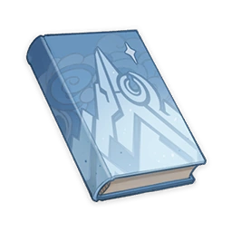

Mondstadt · Books & Literature
Ancient Investigation Journal: Part I
The opening journal follows a pre-Knights aristocratic expedition on Dragonspine. After a snowstorm separates its members, the team changes course toward a locked chamber said to hold frescoes and Starsilver weapons.

The opening record of A Land Entombed
Part I is the first of three journals from the Dragonspine World Quest A Land Entombed. Stevens identifies them as records from an aristocratic investigation team that set out before the Knights of Favonius era. The author remains unnamed; the item description says only that the writer seems to have belonged to Mondstadt’s former aristocracy.
The journal’s focus is the expedition and its political expectations, not a general survey of Dragonspine. The writer wants to return with discoveries that will satisfy Master Landrich and quiet people plotting against the aristocratic order.
A storm divides the party
The entry opens in worsening weather. Snow and gusts make travel difficult, and several companions have already gone missing in a storm. The writer hopes they can find their way back to camp, while admitting that concern for them persists despite pressure to complete the mission.
This is a personal field note from one member of the party. It does not give a complete roster or explain what happened to every missing companion at this point.
Eberhart changes the target
The team had planned to inspect a cellar in the southwestern ruins. After Eberhart deciphers an inscription, they instead head for a locked chamber with a circular entrance. He says the chamber may contain ancient frescoes and weapons made from Starsilver; Master Ingbert calls the prospect a major discovery.
The journal reports the claim and the expedition’s decision, not a confirmed find. The team has not opened the chamber by the end of Part I, and no frescoes or weapons are shown in this entry.
A cautious ending
The writer remembers Landrich’s insistence that the group press on and bring home achievements. They also preserve Eberhart’s reassurance that the missing companions, raised as aristocrats, could probably return on their own. The optimism is uneasy: the author still worries about the people lost in the storm.
The final note says the group will inspect the ruins’ stability before going deeper. Part II shows how that plan unfolds after the team fails to open the circular door.
Location and limits
Part I is found in a chest near the circular cave entrance at Entombed City - Ancient Palace. It starts A Land Entombed; Stevens asks the Traveler to locate the other two parts and later interprets the complete set as evidence about an otherwise poorly recorded expedition.
The journal does not identify the ruins as Sal Vindagnyr or say that the team found the mountain’s ancient civilization. It records what the expedition hoped to investigate, not a result it never reached.
This is an original CoreGG reading guide, not an official HoYoverse article or a reproduction of the game text. Source links below identify the records used so you can check the original context.
Sources & references
Check these sources for the original game text and reference trail.